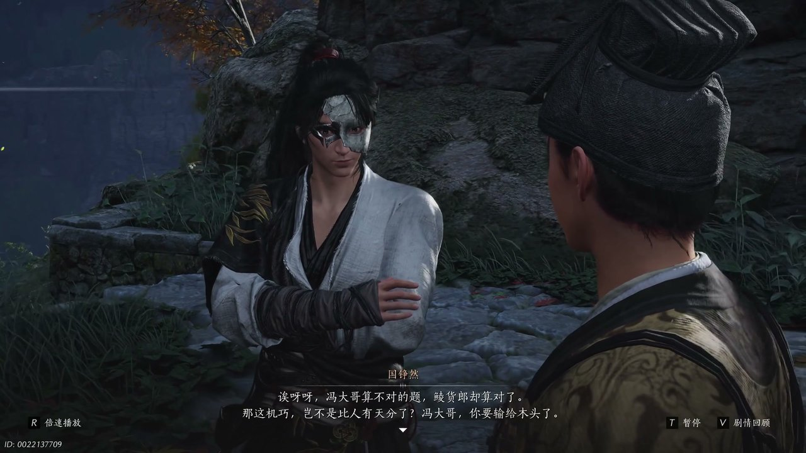
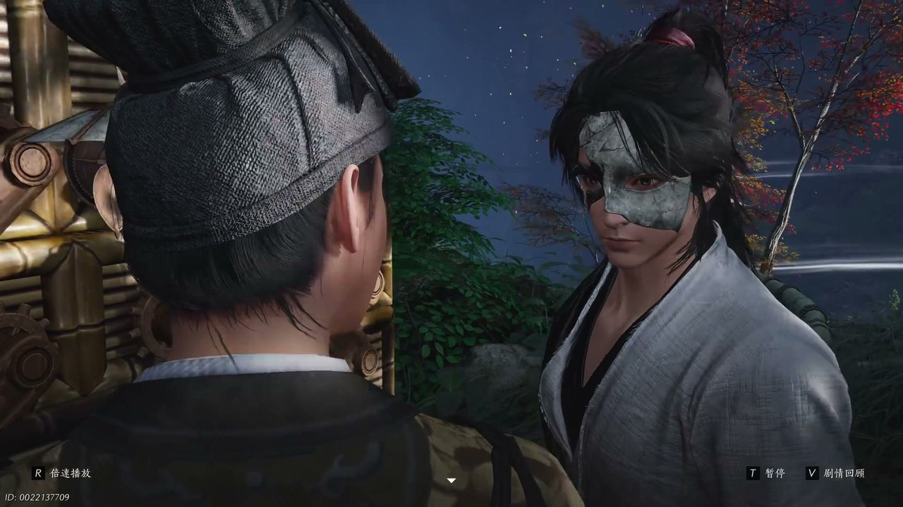
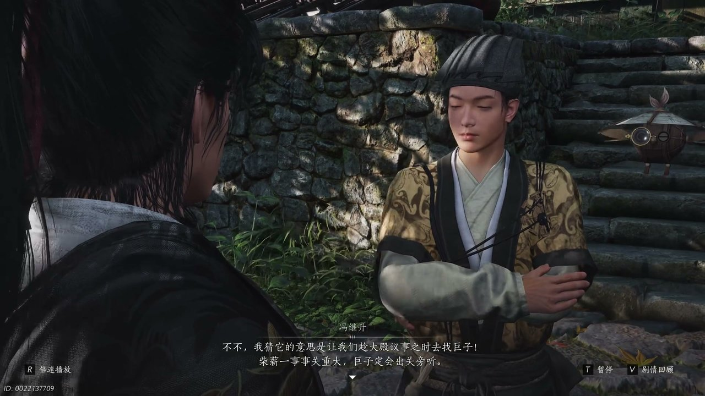
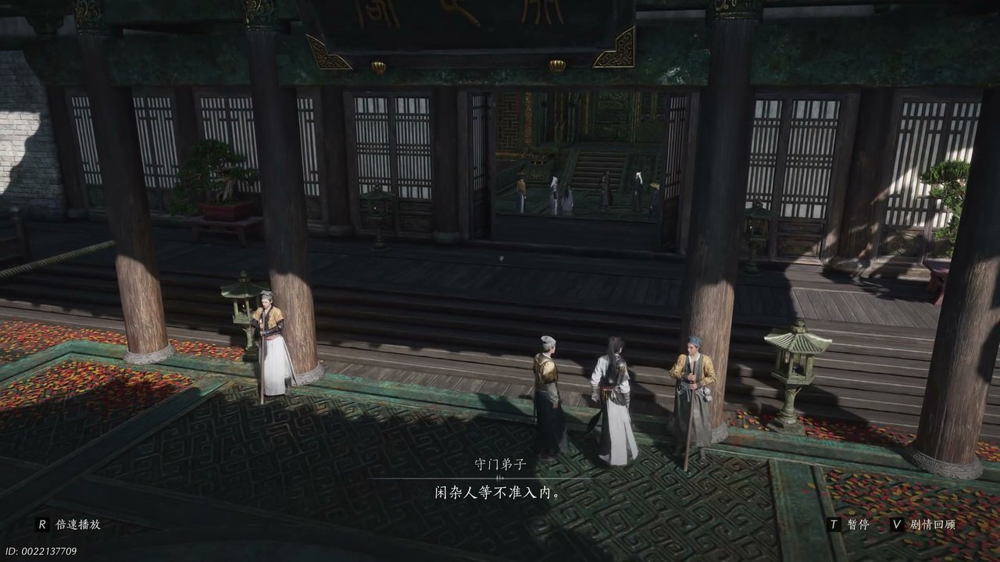
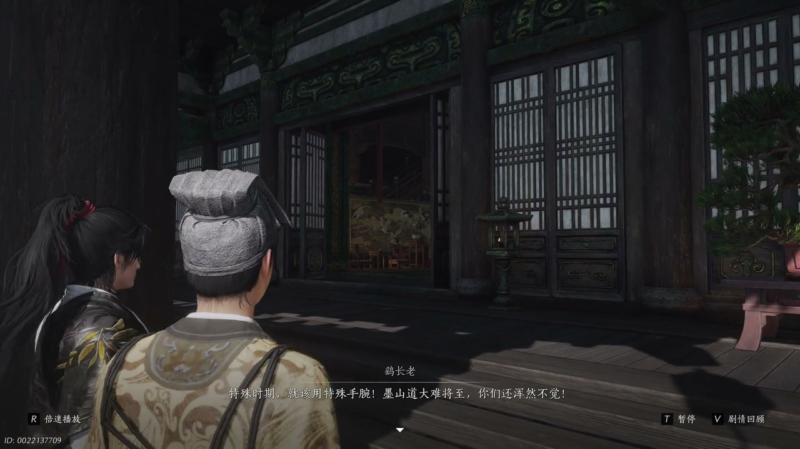
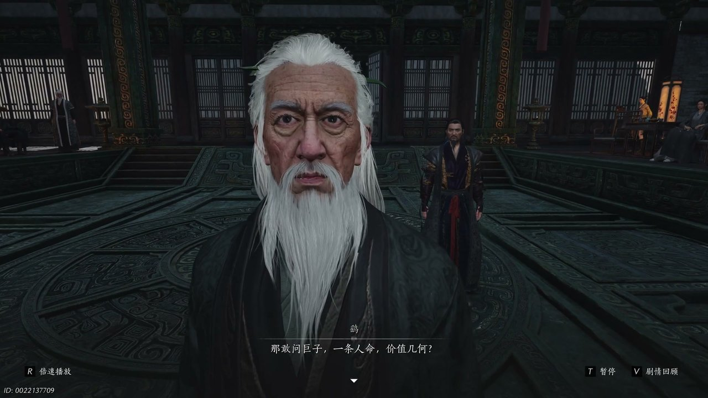

燕云背后的故事：第22集 墨山道
燕云背后的故事：第22集 墨山道

朋友们，上一集咱们说到——造出寄生机、闯过接探崖、混入不见山腹地；新来的朋友可能纳闷，少东家独自踏入墨门腹地，为何迟迟无法见到墨门巨子。简单说，陆师姐拦下冯继升单独问话，少东家只能伪装墨门弟子，在不见山里四处打探寒姨的踪迹。可他哪知道，想要见到巨子，必须卷入墨门内部开山封山的纷争之中。这不，少东家偶遇冯继升，二人靠着一台奇特机关，找到了进入长老大殿议事的机会。

不见山一处偏院堆放着大量机关木料，木柴日渐短缺，空气中弥漫着木屑干燥的气息。少东家盯着运转不停的林货郎机关，眉头微微皱起，开口说道：“龙大哥不太对吧。”冯继升蹲在一堆齿轮构件旁，指尖拨弄着精密零件，迟疑回应：“好像是不太对，但是哪一步算错了呢。”少东家目光落在林货郎吐出的纸片上，伸手拾起纸片，上面清晰写着一百六十斤的数字，他恍然大悟，告诉冯继升这纸片便是方才难题的答案。冯继升满脸诧异，感慨林货郎竟拥有这般运算能力，还以为是自己离开这段时间机关得到了更新改造。少东家笑着打趣冯继升，说他竟然输给一具木制机关，冯继升不肯认输，当即取出一道机关难题，想要和这台机关一较高下。

冯继升神情认真，对着林货郎机关说出一道关于偏心轮与拉力的术数难题，话音落下片刻，机关便吐出了正确答案。少东家随口报出得数：“15军对吗。”冯继升见状神色失落，坦言自己的才能竟然比不上一具木制机关。少东家连忙出言宽慰，觉得这台机关经过改良，已经拥有不输常人的运算能力，早已从售卖货物的机关，变成了专门演算的器具，还给它取名计算机。冯继升细细品味这个名字，觉得寓意深远，称赞这机关乃是继往开来的奇妙造物，还邀请少东家也出题让计算机演算。少东家思索片刻，想问出关于淮南的事情，话语却十分笼统，计算机迟迟没有反应，冯继升以为机关出现故障，打算拆开机身进行维修。

就在冯继升准备拆解计算机之时，机关忽然吐出一张纸条，上面记录着不见山柴薪紧缺，千年度村民过冬所需柴薪数目，还列出了墨门弟子分配的相关问题。少东家十分意外，没想到计算机反倒抛出了一道新的难题。冯继升看到纸条内容之后猛然醒悟，告诉少东家，入冬之后长老们一直在为柴薪分配的事情争执不休，今日大殿还要专门召开议事大会，有长老立下誓言要彻底解决这件事。少东家这才明白计算机的用意，想要见到巨子，就必须借着解决柴薪难题的机会前往大殿，冯继升分析，柴薪事关整个墨门安危，巨子必定会出关旁听这场议事。二人不再研究机关构造，整理衣衫，准备赶往长老议事大殿。

通往大殿的通道两旁排列着各式墨门机关装置，通道石壁内嵌着齿轮匣，轻轻触碰便能感受到齿轮咬合的震动。守门弟子守在大殿石门之外，面色严肃开口阻拦：“闲杂人等不准入内。”少东家按照之前冯继升交代的说辞，谎称自己是彭长老新收的弟子，陪同他人前来参会。守门弟子却提出质疑，说彭长老早已安排一位贵客代为参会，索要贵客令牌。少东家心中一慌，谎称令牌放在包裹之中，拉着冯继升暂时退到一旁。冯继升忽然拿出一枚特制腰牌，说这是彭长老为贵客准备的信物，持有腰牌便能在墨城之内畅通无阻，二人借着腰牌的掩护，顺利混到大殿之外，等候进入议事场所。

大殿之内气氛紧张，各位长老分列两侧，彼此言语交锋，鹞长老情绪激动，高声说道：“特殊时期就该用特殊手腕，墨山道大难将至，你们还浑然不觉。”鹳长老连忙出言安抚，告知众人开山与封山两派票数持平，只等彭长老的客卿到来再做决断。鹞长老对此十分不满，认为彭长老请来的客卿必定偏向山外之人，想要代替彭长老投票，引得其他长老纷纷反对。少东家躲在殿外观察局势，觉得长老们争执不休，想要冒充客卿混入其中十分困难。晋中原悄然走到少东家身旁，叮嘱他可以适当使用江湖手段化解困境，随后冯继升出面，以彭长老使者的身份，带着少东家以客卿随从的身份进入大殿。

鹞长老见到少东家这般年轻，面露不屑，出言刁难，接连抛出几道复杂的土木、钱粮算术题目。少东家依靠之前计算机演算的思路，逐一算出答案，令众位长老十分惊讶。鹞长老依旧不肯罢休，不再谈论柴薪与通路修复的账目，厉声质问：“一条人命价值几何。”他细数培养一名墨门弟子需要耗费的钱财与光阴，说起自己数位弟子外出助人不幸殒命的过往，满心悲痛，坚持墨门应当封山自保，不愿再让弟子为了救助外人白白牺牲。一众长老各持己见，有人坚守墨家兼爱之道，反对封山，有人顾及墨门安危，认同鹞长老的想法，大殿之内再次陷入激烈争论，晋中原这时缓步走出，开口想要调和众人之间的矛盾。
这一集看下来，我最大的感受就是墨门内部深陷两难抉择的困局。上一集里我们只知道墨门山门森严、巨子隐匿行踪、寄生机意外坠落山崖，到了这一集，我们得知开山封山之争、柴薪紧缺危机、穷奇师屡次发难三条全新线索。巨子究竟身在何处？乌金炼制之法藏着什么秘密？司南剑客为何能随意出入不见山？所有线索尽数收拢，少东家跟随晋中原揭露司南剑客的身份，墨门大殿迎来惊天变故，少东家彻底卷入墨门核心纷争之中。下一集，司南剑客直面墨门众位长老，揭露墨门尘封旧事。评论区聊聊你觉得墨门会不会交出乌金炼制之法，点赞关注，下一集解锁尘封往事、乌金秘辛的精彩剧情！
关于我们
📱 公众号名称：三天游戏
✍️ 作者：曾三天
扫码关注公众号，获取每日最新资讯

商务合作与版权
商务合作 / 内容投稿 / 品牌推广
请关注公众号「三天游戏」后台留言联系
版权声明：本文由作者整理，转载需注明出处。